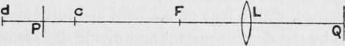

Depth
Description
This section is from the book "The Barnet Book Of Photography", by Herts Barnet. Also available from Amazon: The Barnet Book Of Photography.
Depth
Strictly speaking only one object point out of a series of points all at different distances from the camera can be in focus at one time; but, practically, no want of sharpness can be detected in the other points provided their images are not blurred beyond certain limits. If we fix such a limit of " maximum permissible confusion " we can express definitely the positions of the nearest and farthest points in approximate focus, and so gain a clear idea of the " depth of field." Thus in fig. 4 if the lens l produces a sharp image q of a point p, then other points within a depth c to d will also appear to be in focus, and the positions of c and d can be fixed if we decide on the maximum amount of confusion allowable. The point c limits near depth, or the distance from c to p, while d limits far depth or the distance from p to d.
Fig. 4.
We can fix any limit of confusion, but T}i(i in. is generally the amount allowed, though a smaller limit, say -2^0 in., is necessary if we want really acute definition.
As a rule it is most convenient to express depth by the extra-focal distances of the nearest and farthest points In sharp focus. Thus the depth shown in fig 4 is best described by giving the distances of c and d from f, the front principal focus of the lens.
In the case of a lens focussed on a very distant object there is no question of far depth, near depth alone exists, and when found it is described as the " hyperfocal distance " for the particular stop.
If the limit of confusion is T^ in. the hyperfocal distance is always equal to 100 times the square of the focal length divided by the ratio number of the stop; thus with a six-inch lens and stop //8 the distance is 100 times 36 divided by 8, which is 450 in. or 37^ ft. This hyperfocal distance serves several purposes. First, it is the distance of the nearest object in approximate focus when we focus sharply on an infinite distance. Second, it is the distance on which we should focus to obtain a maximum amount of depth of field, for when we so focus total depth extends from half the hyperfocal distance right up to infinity. Third, it is a constant factor in all calculations relating to depth, and may be truly described as the " depth constant".
To find the limit of near depth when focussing on a near distance, with a lens of constant aperture, multiply the distance by the depth constant and divide the result by the sum of the distance and the constant. Far depth is found by multiplying the distance by the constant and dividing the result by the difference of the distance and constant. Thus if the constant is 30 ft. and we focus on a distance of 10 ft., the distance of the nearest object in focus is thirty times ten divided by thirty plus ten, or 7^ ft., while that of the farthest distance in focus is thirty times ten divided by thirty minus ten, or 15 ft. These results are only correct for the centre of the image excepting with well corrected " flat field " lenses. The following table of constants may be useful:—
Hyperfocal Distances Or Depth Constants For Stop f/8
Focal length in inches ...
Depth constant in feet.
4" | 4i" | 41" | 4!" | 5" | Si" | el" | rS't 34 j |
17' | 19' | 21' | 24' | 26' | 3°' | 32' | 34' j |
Photographic Lenses
If we divide the constant by 2, 3, 4, 5, etc, in succession, we get a series of distances of " consecutive depth," such that if we focus on any one of them the two adjacent dimensions are the nearest and farthest distances in focus with the stop for which the constant is calculated. Thus, if the constant for f/8 is 30 ft., we get the series, 30 15, IO, 7 1/2 6, and 5 ft., and if we focus on, say, 7 1/2 ft. with f/8, depth extends from 6 ft. to 10 ft. If we usef/16, depth is shown by the second dimension from the distance in focus, so that focussing on 7 1/2 ft. with f/16, depth extends from 5 ft. to 15 ft. On this principle a depth-indicating focussing scale can readily be set out.
With inconstant lenses depth varies slightly from the theoretical amount, while if spherical aberration exists it may vary to a large extent. Generally speaking, positive spherical aberration reduces all depth distances, while negative aberration increases them.
The greater the aperture and the greater the focal length the less is the depth available. Hence, when great rapidity and considerable depth are both desirable qualities, as in hand camera work, a lens of short focal length is absolutely essential.
Continue to:
- prev: Aperture
- Table of Contents
- next: Focussing Scales
Tags
paper, print, negative, exposure, lens, development, camera, focus